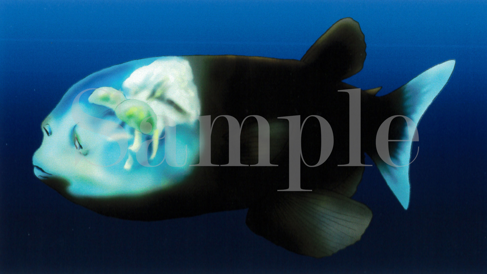
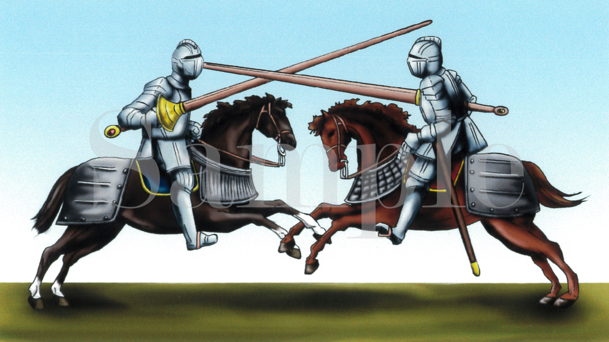
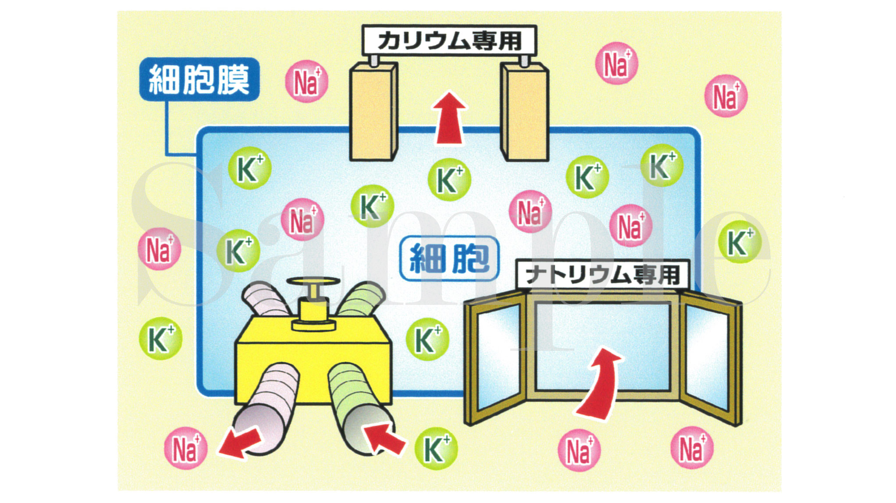
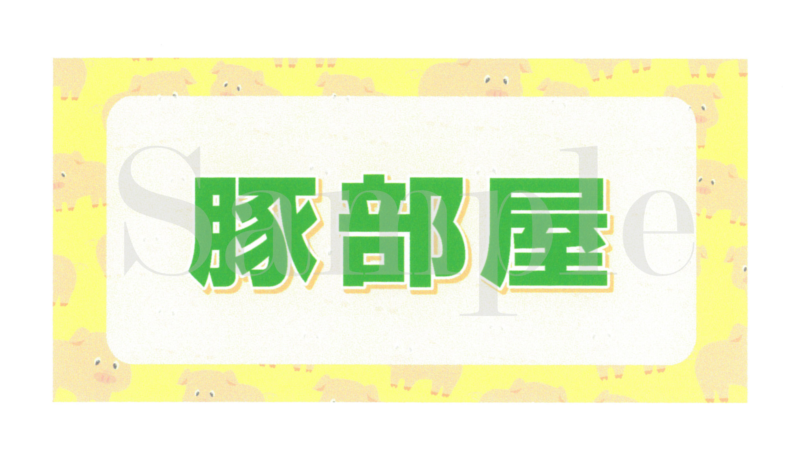
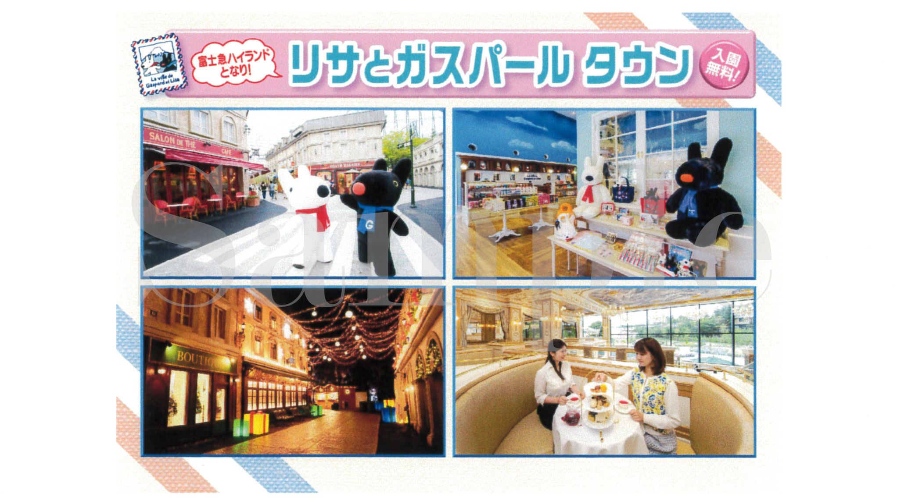
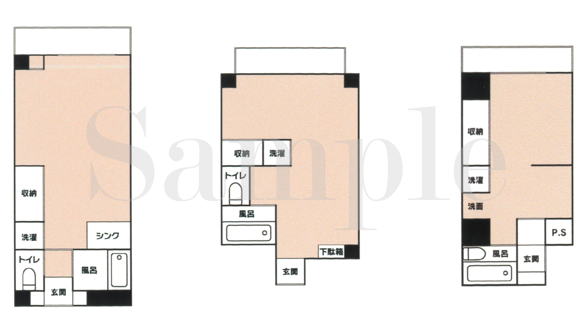

↑
TOP
TOP
2012-2016年
イラスト
| イラスト アイコンイラスト |
|
| イラスト 白黒ピクトグラム風イラスト |
|
 |
イラスト 加湿器の水蒸気 |
 |
イラスト ２コマ アホの坂田 |
 |
イラスト たい焼きのトッピング |
 |
イラスト レモンスカッシュ |
 |
イラスト マロリーワイス症 |
|  | リアルイラスト デメニギス |
| リアルイラスト 中世の騎士 1s |
|
|  | リアルイラスト 中世の騎士 2s |
|  | フリップデザン 細胞 ナトリウム カリウム |
 |
フリップデザン トマト部屋 |
| フリップデザン 豆腐部屋 |
|
|  | フリップデザン 豚部屋 |
| フリップデザン ４大絶叫コースター |
|
|  | フリップデザン リサとガスパールタウン |
 |
フリップデザン 日本全国食べ尽くし！！ |
|  | 素材 間取り図 |
 |
素材 地図 |
| 素材 地図 |